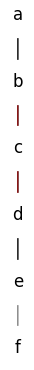
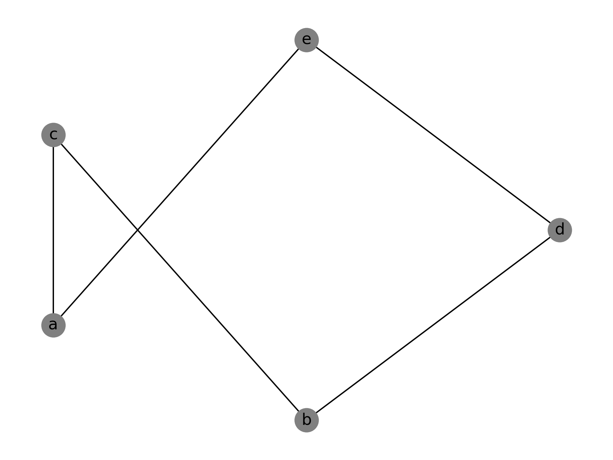
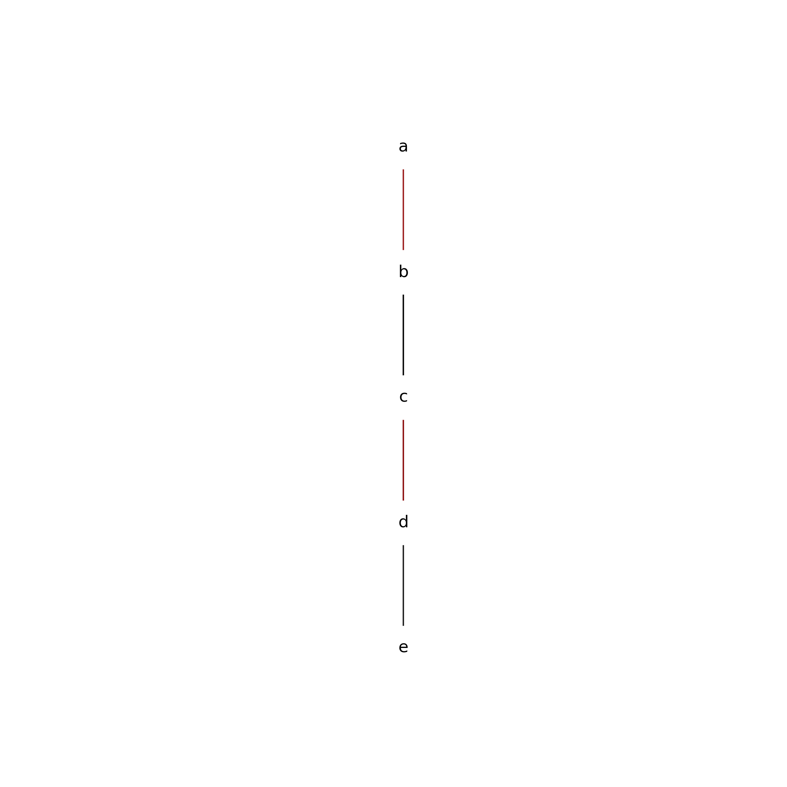

I asked ChatGPT: > Write a Python script which takes a networkx.DiGraph object representing a partial order and plot it according to the rules of a covering diagram.
It responded by naming the chat session “Partial Order Plotting” and gave the following response: > Sure, here’s a Python script that takes a networkx.DiGraph object representing a partial order and plots it according to the rules of a covering diagram using matplotlib library:
import networkx as nx
import matplotlib.pyplot as plt
def covering_diagram(dg):
"""
Plot the directed graph according to the rules of a covering diagram.
"""
levels = list(nx.topological_sort(dg))
pos = {}
for i, level in enumerate(levels):
for j, node in enumerate(level):
pos[node] = (j, -i)
# Create a list of edges to add for the covering relations
edges = []
for i in range(len(levels) - 1):
for a in levels[i]:
for b in levels[i + 1]:
if set(dg.predecessors(b)).issubset(set(dg.predecessors(a))):
edges.append((a, b))
# Create the plot
plt.figure(figsize=(8, 8))
nx.draw_networkx_nodes(dg, pos, node_color='white', node_size=1000)
nx.draw_networkx_labels(dg, pos)
nx.draw_networkx_edges(dg, pos, edgelist=dg.edges(), arrows=True, alpha=0.5)
nx.draw_networkx_edges(dg, pos, edgelist=edges, edge_color='r', arrows=True, alpha=0.5)
plt.axis('off')
plt.show()This function takes a
networkx.DiGraphobjectdgas input, and it computes the levels of the partial order usingnx.topological_sort(). It then assigns positions to the nodes based on their level and position within the level, and adds edges for the covering relations. Finally, it uses matplotlib to plot the graph with the covering relations highlighted in red. You can call this function with yournetworkx.DiGraphobject as follows:
from script_1 import covering_diagram
import networkx as nx
# Create a directed graph
dg = nx.DiGraph()
dg.add_nodes_from(['a', 'b', 'c', 'd', 'e', 'f'])
dg.add_edges_from([('a', 'b'), ('a', 'c'), ('a', 'd'), ('b', 'e'), ('c', 'e'), ('d', 'e'), ('e', 'f')])
# Plot the graph with a covering diagram
covering_diagram(dg)This will create a plot of the partial order with a covering diagram.
After checking through the code for anything looking dangerous, I ran the code and it produced the following output:

As people like to say about ChatGPT, it is both impressive and imperfect. Let’s go over some of it.
The first thing that struck me as odd was that it chose a total (i.e. linear) order. I would have been interested in seeing more arboricity in structure.
I also don’t see why running dg.add_nodes_from(['a', 'b', 'c', 'd', 'e', 'f']) makes any sense if you are going to run dg.add_edges_from([('a', 'b'), ('a', 'c'), ('a', 'd'), ('b', 'e'), ('c', 'e'), ('d', 'e'), ('e', 'f')]) because NetworkX will actually add the needed nodes as it adds the edges.
Using plt.show is common for quick little plots, which I guess wasn’t prohibited from what I asked. But I would rather that it return a matplotlib.pyplot.axis object, or receive an axis object as a parameter to covering_diagram.
It is completely reasonable that neither ChatGPT nor a human would account for an unstated preference that the output plot have a transparent background, which can be accomplished by passing transparent=True to the matplotlib.pyplot.savefig command. I can’t expect a machine to read my mind though! (Can I?)
And when it said “Finally, it uses matplotlib to plot the graph with the covering relations highlighted in red.” I was confused at first. But yes, some of the edges are coloured red according to whether it thought they were part of the covering relation on the input set.
It is appreciated that it attempted a docstring that seems to describe the general description of what the function is supposed to accomplish, but I didn’t like that it said nothing about the parameters. Without context, how would I know what dg is supposed to be?
Offhand I don’t know if the function is correct, but I would like to try some test cases on it.
Before doing that, I will replace plt.show() with plt.savefig('chatgpt_cover_relation_plotter_output_test.png', dpi=300, transparent=True) so I can comfortably embed the output on this blog post. And now let us run this case
from script_1 import covering_diagram
import networkx as nx
# Create a directed graph
dg = nx.DiGraph()
dg.add_edges_from([('a','c'), ('a','e'),('b','c'), ('b','d'), ('b','e'), ('d','e')])
# Plot the graph with a covering diagram
covering_diagram(dg)which should produce an output similar to this:

but instead it outputs this:

In conclusion, this code doesn’t work.